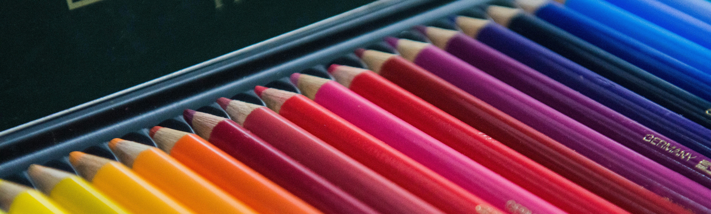

Hobbies
Tekenen & digital art

Tekenen als hobby
Voor mij is tekenen een hobby waarbij ik steeds nieuwe manieren ontdek om mijn ideeën vorm te geven. Soms begin ik met een eenvoudige schets op papier, andere keren start ik digitaal met een leeg canvas in Procreate. Het proces zelf is voor mij minstens zo belangrijk als het eindresultaat.
Tijdens het tekenen ontdek ik welke details extra aandacht verdienen en welke lijnen ik kan weglaten. Ik geniet ervan om stap voor stap te bouwen aan een tekening, met kleine aanpassingen die een groot verschil maken. Dit helpt me ook om in andere projecten meer geduld en structuur aan te brengen.
Wat ik maak
Ik maak verschillende soorten werk: van snelle schetsen en character designs, tot uitgewerkte digitale illustraties met kleurverloop en schaduw. Soms gebruik ik referentiefoto's, andere keren begin ik vanuit mijn fantasie. Het is leuk om te zien hoe een idee langzaam groeit tot iets dat echt werkt.
Naast losse tekeningen werk ik ook aan kleine series of thema's. Zo kan ik beter leren wat ik mooi vind en wat bij mijn stijl past. Het resultaat deel ik graag in mijn portfolio, maar soms bewaar ik het ook gewoon voor mezelf.
Tekenen en techniek
De combinatie van tekenen en techniek is voor mij heel inspirerend. Het werken met Procreate of andere digitale tools heeft me geleerd om beter na te denken over lagen, kleurgebruik en compositie. Tegelijkertijd blijf ik waarde hechten aan analoge technieken zoals potlood en inkt.
Door te tekenen leer ik ook om fijntjes te observeren en te vertalen wat ik zie naar een visuele vorm. Die vaardigheid gebruik ik ook bij ontwerpen van websites en user interfaces: helderheid in beeld en structuur is altijd het doel.
Spelen en ontspannen

Gamen als hobby
Gamen is voor mij meer dan entertainment; het is een manier om te ontspannen en tegelijk mijn probleemoplossend vermogen te trainen. Open world-spellen zoals "The Legend of Zelda" laten me genieten van verkennen en kleine ontdekkingen, terwijl story driven games zoals "Expedition 33" me meenemen in een verhaal met emotie en keuzes.
Door te spelen leer ik geduldigheid en doorzettingsvermogen. Ik probeer vaak verschillende strategieën totdat ik een oplossing vind. Dat helpt me ook bij programmeren: als iets niet werkt, ga ik door totdat ik de juiste oplossing heb.
Enkele favoriete games
- Expedition 33
- Zelde: Breath of the wild
- Minecraft
Waarom deze hobby's belangrijk zijn voor mij
Deze hobby's helpen mij om creatief te blijven denken en nieuwe ideeën te vinden. Ze geven me een balans tussen leren en ontspannen: door te tekenen blijf ik scherp op vorm en kleur, en door te gamen blijf ik scherp op logica en probleemoplossen.
Uiteindelijk zorgen deze activiteiten ervoor dat ik met meer plezier en energie werk aan mijn studie en projecten. Ze geven me ook stof voor gesprekken met anderen, wat weer helpt om ideeën uit te wisselen en te groeien.